Aquatic Entertainment Universe
An animated entertainment-industry mockumentary following Charlie Seahorse and the workers at his aquatic talent agency.
The show is about the agency.
The recurring ensemble is Charlie and the people who work with him. Musical acts, actors, promotional shoots, album launches, and industry absurdities create the situations that expose the staff's personalities and relationships. The celebrities are the clients and the catalysts—not the central cast.
Charlie is male, with the earnest, exuberant energy of Chris Traeger. His professional rivalry with Ted Terner helps drive the workplace comedy. The established format is an animated mockumentary, not a live-action proposal.
Worldbuilding through the work
Client headshots and album-cover development are useful not just as visual gags, but as opportunities to show the employees' different judgments, habits, running jokes, and interpersonal dynamics. The concept package will foreground those interactions rather than presenting an exhaustive client roster.
Recurring-gag example: Jason Seagel and Jason Seagull are the same performer, perceived as a fish by Charlie and a seagull by Ted.
Selected talent-agency artwork
Six user-supplied headshots illustrate the mock agency's promotional language and parody approach. These are not the complete cast or the series' protagonists.
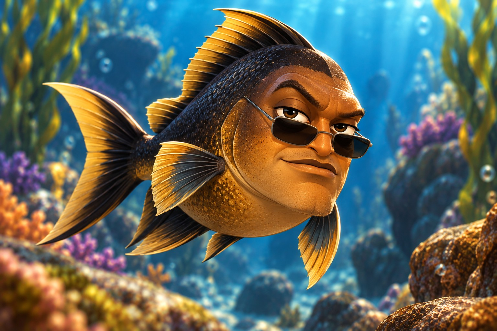
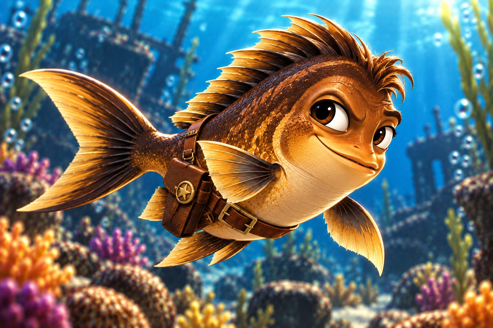
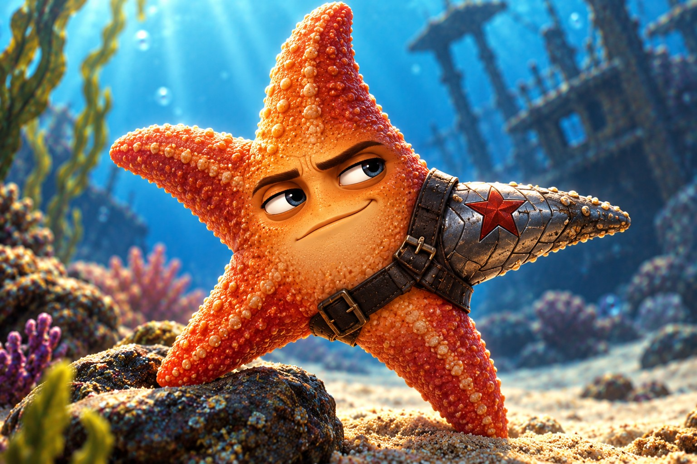
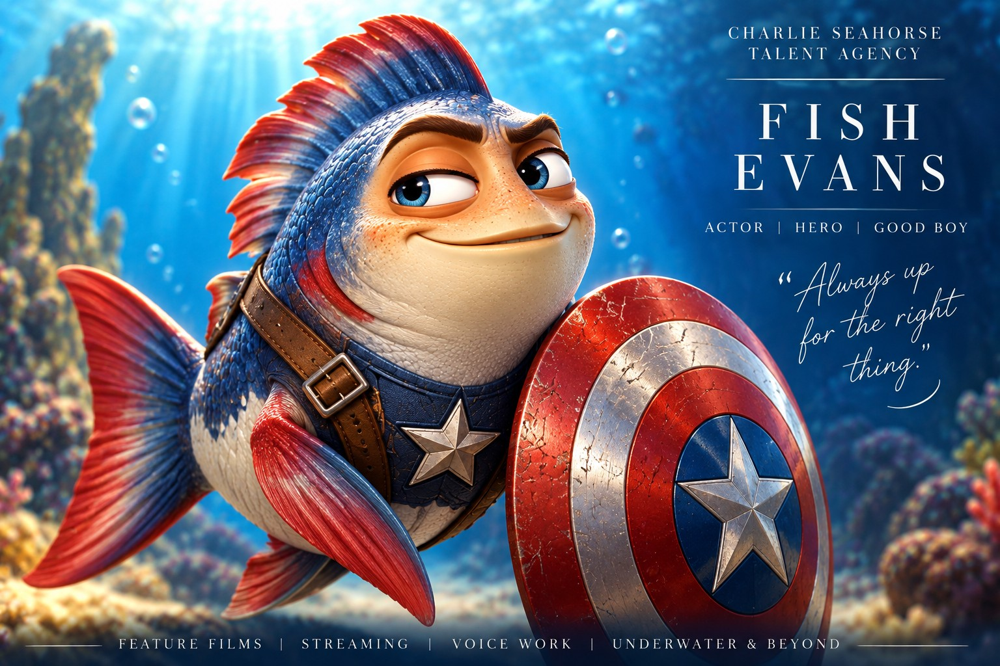
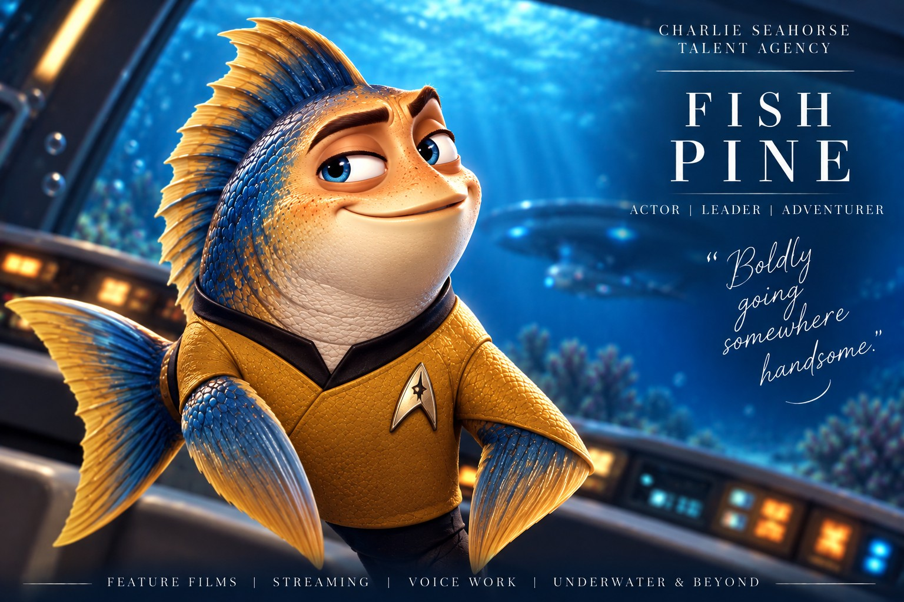
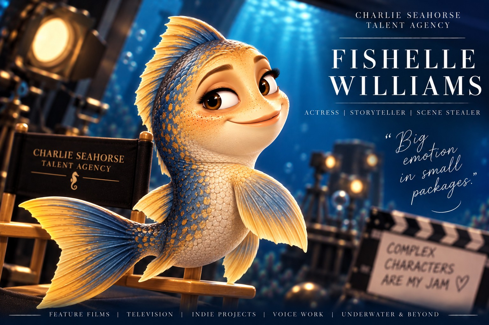
Recovered AEU artwork — agency and entertainment concepts
Approved, user-supplied images restored to the concept portfolio, including both agencies, SalAqua, and the Jason Seagel / Seagull dual-perspective character.
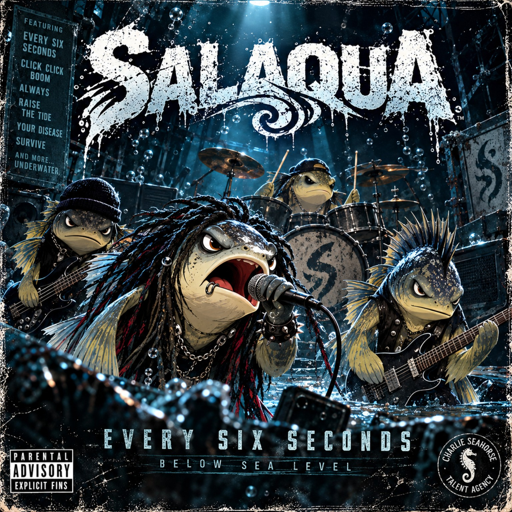
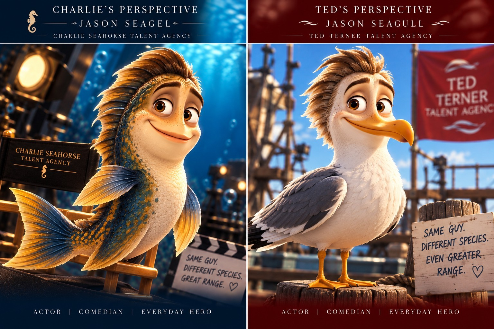
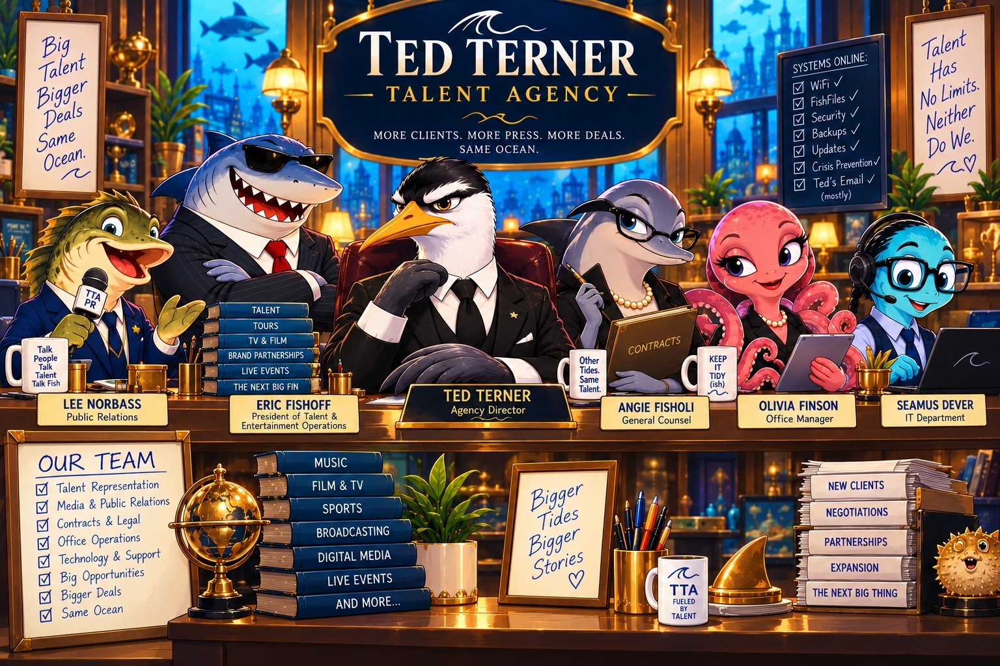
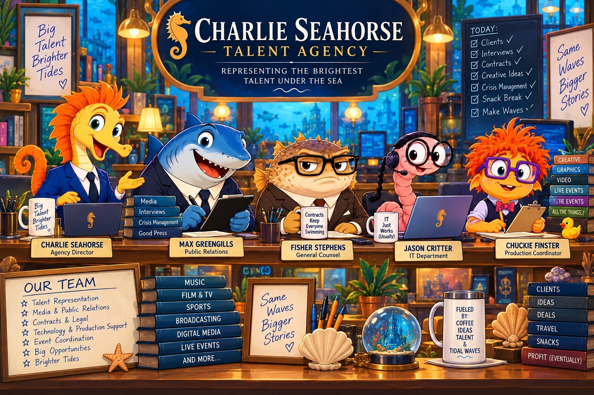
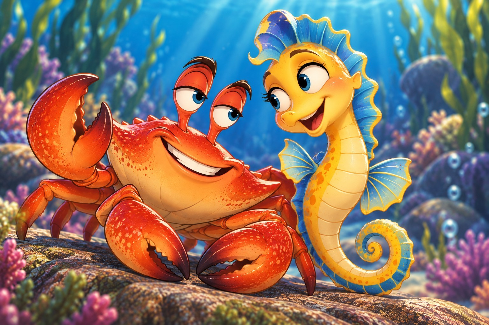
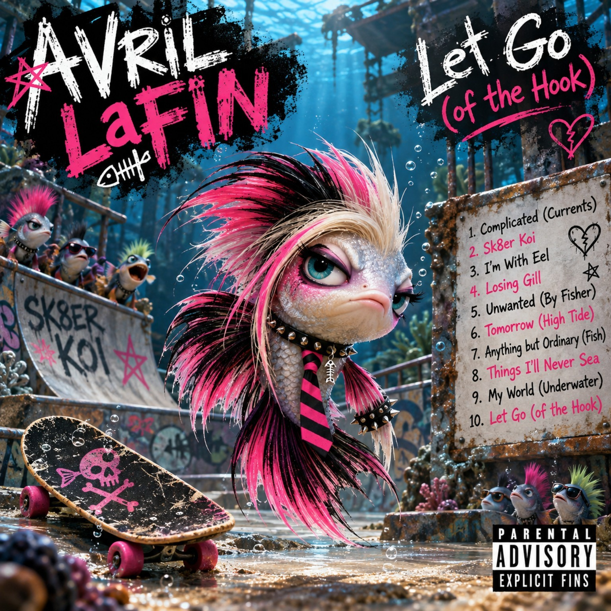
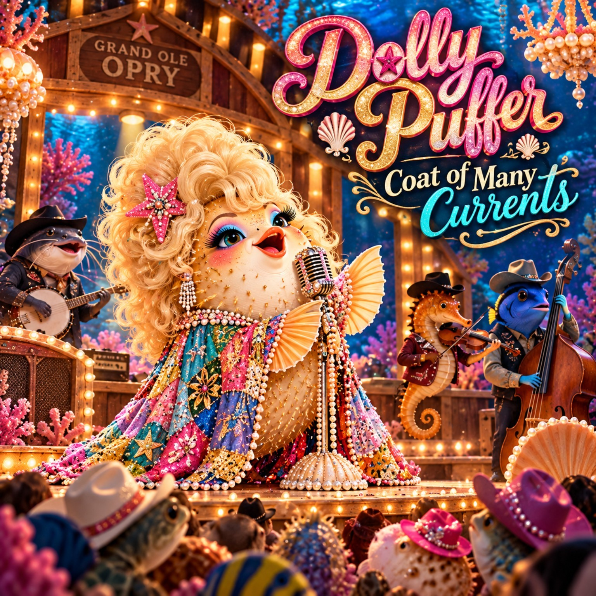
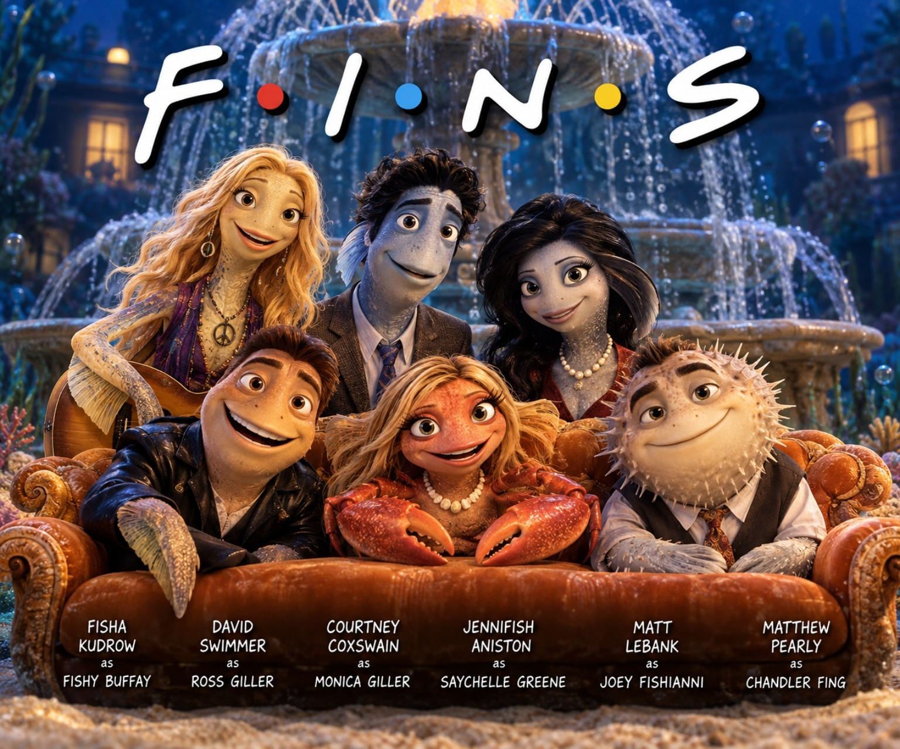
Creative contribution
Concept development, character and relationship design, naming and comedic parody, fictional industry architecture, art direction, iterative feedback, and continuity decisions. Visuals are AI-assisted and should not be described as hand-drawn original illustrations.